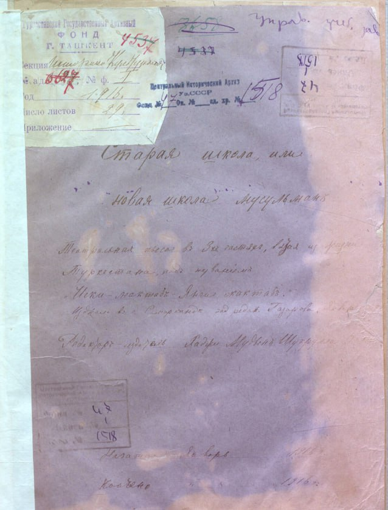
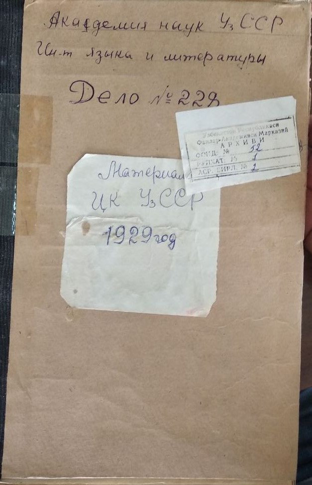

Yangiliklar
Barchasini ko'rish«Jadidlar avlodlari uchrashuvi» umummilliy ilmiy-ma'rifiy yig'ini bo'lib o'tdi
Yangiliklar
26.10.2026
Azamat Ziyo: «Jadidlar orzu qilgan taraqqiyot g'oyalari bugun...»
Tadqiqot
24.10.2026Cho'lponning «Aldanish» va «Vijdon uyg'onishi» asarlari qayta nashr etildi
Nashrlar
20.10.2026Jadid avlodlari Islom sivilizatsiyasi markazida bo'ldi
Tashrif
18.10.2026Obidjon Mahmudov va Farg'ona ma'rifatparvarlari fotoxronikasi
Fotoxronika
15.10.2026
Jadidlar
Barchasini ko'rish
Mahmudxo'ja Behbudiy
(1875 — 1919)

Abdulla Qodiriy
(1894 — 1938)

Abdulhamid Cho'lpon
(1897 — 1938)

Abdurauf Fitrat
(1886 — 1938)

Munavvarqori Abdurashidxonov
(1878 — 1931)
Manbalar
Barchasini ko'rish
O'zbekiston Milliy arxivi
Muhammad Ikrom arxiv hujjatlari ro'yxati
(O'zMA fondi, 1910 — 1916-yillar)

O'zFA Sharqshunoslik instituti
O'zFA MDA 52-fond, 1-ro'yxat, 2-yig'majild, 15-varaq
(Noyob qo'lyozma va rasmiy maktub, 1917-yil)

O'zbekiston Milliy arxivi
O'zMA I-41, o-1, d-1518: Turkiston maorif xabarnomasi
(1912-yil)

O'zFA MDA fondi
52-fond, 73-varaq: Jadid maktablari dasturi va jadvallari
(1914-yil)


Izlanishlar va Asarlar
Barchasini ko'rish
Mahmudxo'ja Behbudiy
«Padarkush yoxud o'qimagan bolaning holi» (3 parda, 4 manzara)
(1911-yil nashri)

Abdulla Qodiriy
«O'tkan kunlar» — birinchi o'zbek milliy tarixiy romani
(1922-yil nashri)

Abdulhamid Cho'lpon
«Kecha va kunduz» — o'zbek ijtimoiy-psixologik romani
(1936-yil nashri)

Abdulla Avloniy
«Turkiy Guliston yoxud axloq» — milliy tarbiya darsligi
(1913-yil nashri)